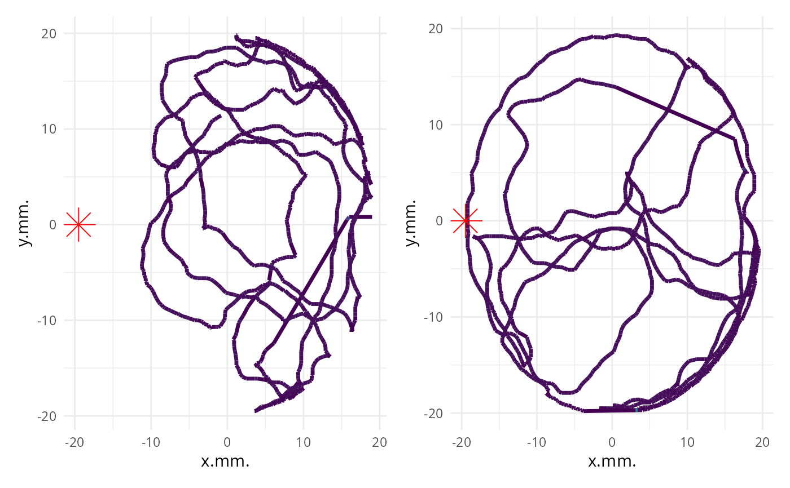
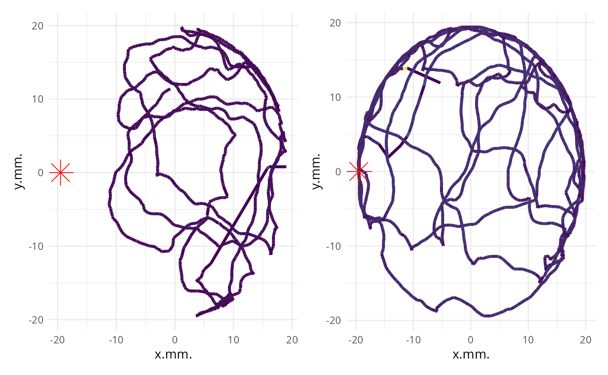
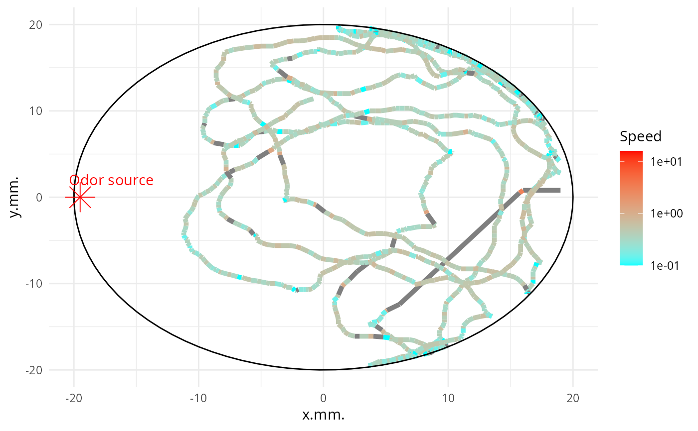

Plot individual map
plot_ind_mitemap.RdPlot individual map
Usage
plot_ind_mitemap(
MiteMap,
file_names = NULL,
ind_index = c(1),
time_animation = FALSE,
add_base_circle = FALSE,
add_odor_source = TRUE,
label_odor_source = NULL,
center_base_circle = c(0, 0),
breaks_animation = 10,
diameter_base_circle = 40,
npoints_base_circle = 100,
linewidth = 1.2,
alpha_shadow = 0.4
)Arguments
- MiteMap
MiteMap (required) The result of import_mitemap ($resulting_data) for raw_data
- file_names
(vector of string, default = NULL) The names of the file(s) (individual(s)) you want to plot (e.g. c("MM012022_05_17_13h25m12s", "MM012022_05_17_09h23m48s")). If not NULL, ind_index is ignored.
- ind_index
(vector of int, default = c(1)) The index numbers of the file(s) (individual(s)) you want to plot
- time_animation
(logical, default FALSE) Does the plot is animate using gganimate ?#'
- add_base_circle
(logical, default FALSE) Does the base circle is plot ?
- add_odor_source
(logical, default TRUE) Does the odor source is plot ?
- label_odor_source
(string, default = NULL) Label of the odor source. Only used if
add_odor_sourceis TRUE. If NULL, no label is added.- center_base_circle
(int) The center of the base circle. Only used if
center_base_circleis TRUE.- breaks_animation
(int) The number of breaks in animation. Only used if
time_animationis TRUE.- diameter_base_circle
(int) The diameter of the base circle. Only used if
center_base_circleis TRUE.- npoints_base_circle
(int) The number of point to draw the base circle. Only used if
center_base_circleis TRUE.- linewidth
(int) The linewidth of the path
- alpha_shadow
(int [0,1]) Alpha value (transparency) for shadow path. Only used if time_animation` is TRUE.
Examples
MM <- import_mitemap(
system.file("extdata", "mitemap_example", package = "MiteMapTools"),
file_name_column = "File (mite ID)",
verbose = FALSE
)
library(patchwork)
p <- plot_ind_mitemap(MM, file_names = c("MM012022_05_17_13h22m59s", "MM012022_05_17_08h23m05s"))
p[[1]] + p[[2]] & theme(legend.position = "none")

p_l <- plot_ind_mitemap(MM, ind_index = c(1, 2))
p_l[[1]] + p_l[[2]] & theme(legend.position = "none")

p_l_base_c <- plot_ind_mitemap(MM,
add_base_circle = TRUE, linewidth = 1.7,
label_odor_source = "Odor source"
)
p_l_base_c[[1]] + scale_color_gradient(name = "Speed", trans = "log10", low = "cyan", high = "red")
#> Scale for colour is already present.
#> Adding another scale for colour, which will replace the existing scale.
#> Warning: log-10 transformation introduced infinite values.

if (!requireNamespace("gganimate", quietly = TRUE)) {
p_l_anim <- plot_ind_mitemap(MM, time_animation = TRUE, breaks_animation = 15)
p_l_anim[[1]]
p_l <- plot_ind_mitemap(MM, ind_index = c(1:6))
(p_l[[1]] + p_l[[2]] + p_l[[3]]) /
(p_l[[4]] + p_l[[5]] + p_l[[6]]) +
plot_layout(guides = "collect") & scale_color_gradient(
name = "Speed", trans = "log1p", low = "cyan", high = "red",
limits = c(
min(unlist(lapply(p_l, function(x) {
min(x$data$dist_from_i_minus_1, na.rm = T)
}))),
max(unlist(lapply(p_l, function(x) {
max(x$data$dist_from_i_minus_1, na.rm = T)
})))
)
)
(p_l[[1]] + p_l[[2]] + p_l[[3]]) /
(p_l[[4]] + p_l[[5]] + p_l[[6]]) +
plot_layout(guides = "collect") &
scale_color_viridis_c(name = "Speed", trans = "log1p", limits = c(0, 2))
}